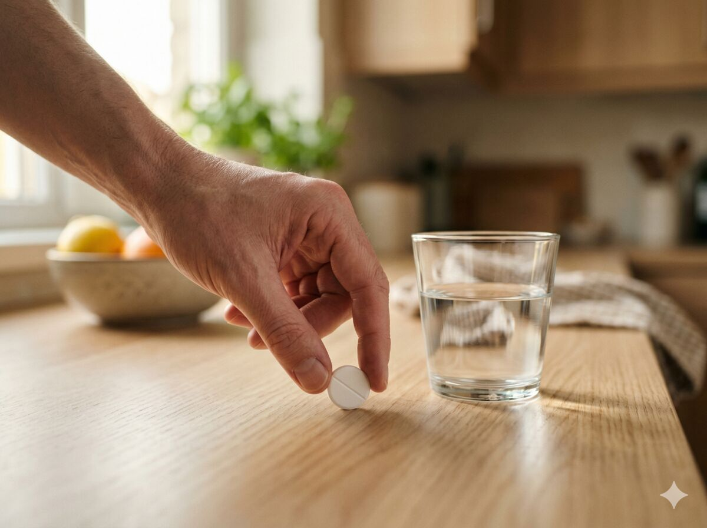

Medicijnen na een maagverkleining, wat verandert er en waar moet je op letten?
Ik had zelf in januari 2024 een gastric bypass bij Vitalys, en één ding waar veel mensen pas later achter komen is dit: medicijnen werken na een maagverkleining niet altijd meer zoals vroeger. Soms merk je daar weinig van. Soms juist heel veel. Een tablet die je jaren prima slikte, kan ineens te sterk vallen, minder doen of gewoon niet lekker meer landen.
Dat is ook logisch. Je maag is kleiner, voedsel en medicijnen gaan anders door je lijf heen, en bij een bypass wordt een deel van je spijsvertering letterlijk omgeleid. Daardoor kan opname veranderen. Niet bij iedereen hetzelfde, en ook niet bij elk medicijn even sterk, maar het is wel iets om serieus te nemen.
Ik wil hier geen angstverhaal van maken, want daar heb je niks aan. Maar ik wil ook niet doen alsof het bijzaak is. Want als jij bloeddrukmedicatie, antidepressiva, anticonceptie of pijnstillers gebruikt, dan wil je gewoon weten waar je aan toe bent. En vooral: wat je wél moet doen.
Ga nooit zelf gokken met medicijnen na een maagverkleining. Bespreek dit altijd met je arts en apotheker, het liefst al vóór de operatie en daarna opnieuw als je thuis bent. Maak een lijst van alles wat je slikt, ook supplementen en zelfzorgmiddelen, en neem die mee naar elk gesprek.
Waarom medicijnen na een maagverkleining anders kunnen werken
Voor de operatie had je lichaam een bepaald ritme. Medicijnen kwamen in je maag, bleven daar een tijd, en gingen daarna verder. Na een maagverkleining verandert dat. Bij een bypass is de maag klein en wordt een deel van de route omzeild. Daardoor kunnen sommige middelen sneller binnenkomen, minder goed worden opgenomen of minder voorspelbaar werken.
Dat is ook waarom twee mensen na dezelfde operatie toch anders kunnen reageren. De ene merkt nauwelijks verschil. De ander moet ineens een andere vorm, andere dosering of extra controle. Dat betekent niet dat er iets mis is. Het betekent alleen dat je lijf niet meer precies volgens de oude handleiding werkt.
Vraag na de operatie bij elk nieuw medicijn altijd even: is dit geschikt na een maagverkleining?

Ibuprofen en andere NSAID's: hier moet je echt mee oppassen
Waarom ibuprofen na een bypass zo'n slecht idee is
Ibuprofen, diclofenac, naproxen en aspirine vallen in de hoek van NSAID's. Dat zijn middelen die je maag en darmwand kunnen irriteren. Na een gastric bypass is dat extra link, omdat de nieuwe verbinding en het slijmvlies daar gevoeliger zijn voor zweren, bloedingen en irritatie. Juist daarom zeggen veel artsen en richtlijnen: liever niet, en zeker niet op eigen houtje.
Veel mensen denken: maar het is toch gewoon een pijnstiller van de drogist. Ja, en precies daarin zit het gevaar. Vrij verkrijgbaar betekent niet automatisch veilig voor jouw nieuwe maag.
Zet voor jezelf in je telefoon of medicatielijst dat NSAID's na jouw operatie niet standaard veilig zijn. Zeg dit ook bij elk apotheek of huisartscontact: "Ik heb een maagverkleining gehad, wilt u even checken of dit middel daarvoor geschikt is?"
Wat mag meestal wel als pijnstiller
Voor gewone pijn, koorts of napijn wordt meestal paracetamol gebruikt. Dat is voor veel mensen de veiligere basis na een maagverkleining, zolang je je houdt aan de dosering op het doosje of wat je arts heeft afgesproken.
Wat als je toch een NSAID nodig hebt
Soms ligt het ingewikkelder. Als een arts vindt dat een ontstekingsremmer echt nodig is, dan moet er gekeken worden wat voor jou veilig is, of er een alternatief is, en of er extra bescherming nodig is. Beslis dit nooit alleen.
Slow release en maagsapresistente tabletten: die zijn vaak niet handig meer
Waarom deze vorm na een maagverkleining lastiger is
Er zijn tabletten die juist gemaakt zijn om langzaam af te geven, of pas later open te gaan, bijvoorbeeld verderop in je spijsvertering. Na een maagverkleining kan zo'n tablet te weinig tijd krijgen of op de verkeerde plek uitkomen. Daarom hebben artsen en apothekers vaak liever gewone, direct werkende vormen.
Het gaat dan om woorden als XR, SR, MR, CR, LA, retard of maagsapresistent op het doosje.
Wat je hiermee moet doen
Ga niet zelf capsules openmaken of tabletten fijnstampen zonder check. Vraag je apotheker of arts of er een gewone versie, vloeibare vorm of oplosbare tablet bestaat die beter past na een maagverkleining.
Loop je medicijnlijst één voor één langs en vraag letterlijk: "Zit hier iets tussen dat XR, SR, MR, CR, LA of maagsapresistent is?"
De anticonceptiepil: waarom hier extra opletten slim is
De werking van orale anticonceptie kan minder betrouwbaar worden, vooral na een bypass. Daarbij komt nog iets anders: na veel gewichtsverlies kan je vruchtbaarheid juist toenemen.
Zeker in de eerste maanden na de operatie wil je geen gedoe of twijfel. In meerdere richtlijnen wordt daarom geadviseerd om niet blind op de pil te vertrouwen en non-orale opties te bespreken. Denk dan aan een spiraaltje, implantaat, prikpil of aanvullende bescherming. Bespreek dit met je huisarts of gynaecoloog.
Als jij of je partner vertrouwt op de pil: bespreek vóór de operatie al welk alternatief of welke extra bescherming nodig is.
Antidepressiva en andere psychische medicatie: nooit zelf mee rommelen
Na een bypass kan de opname van antidepressiva en andere psychische medicatie veranderen. Bij sommige mensen werkt een middel ineens anders: sneller, zwakker of grilliger. Juist omdat het om je stemming, rust en dagelijks functioneren gaat, wil je daar niet zelf mee gaan schuiven.
Niet zomaar stoppen. Niet zelf halveren. Niet denken: "ik slik minder want ik eet ook minder." Sommige mensen hebben na de operatie juist extra controle nodig.
Als jij onder behandeling bent voor depressie, angst, ADHD, bipolair of iets anders: zorg dan dat je behandelaar weet dat er een maagverkleining aankomt. Goede overdracht is hier geen luxe.
Spreek vóór de operatie al af wie jouw vaste aanspreekpunt is als je na de operatie merkt dat je psychische medicatie anders aanvoelt.
Pijnstillers direct na de operatie
Na de operatie zelf is pijn normaal. Vaak krijg je een schema mee met paracetamol, en soms iets sterkers voor kort gebruik als dat nodig is. Tramadol kan soms wel, maar meestal kortdurend en in overleg.
Thuis zelf ibuprofen of naproxen erbij pakken is nou precies wat je na een bypass wilt vermijden. Vraag bij ontslag altijd heel concreet: welke pijnstiller mag ik thuis gebruiken, hoe vaak, en welke mag ik juist niet nemen?
Medicijnen kunnen na de operatie opnieuw ingesteld moeten worden
Niet alleen de opname verandert, soms verandert ook je behoefte aan een medicijn. Zeker bij middelen voor diabetes of bloeddruk kan er na een maagverkleining snel veel verschuiven. Je eet minder, valt af, je lichaam reageert anders.
Dat betekent niet dat iedereen zijn halve medicijnkast kan schrappen. Het betekent wel dat controles belangrijk zijn. Laat in de eerste periode na je operatie laagdrempelig meekijken naar bloeddruk, bloedsuiker en hoe je op je vaste medicijnen reageert.
Praktische checklist voor je arts of apotheker
- Is dit medicijn geschikt na een maagverkleining?
- Is dit een slow release, XR, SR, MR, CR, LA of maagsapresistente tablet?
- Is er een gewone, direct werkende of vloeibare variant?
- Mag ik ibuprofen, diclofenac, naproxen of aspirine gebruiken?
- Welke pijnstiller is voor mij veilig?
- Moet mijn dosering opnieuw beoordeeld worden?
- Is mijn anticonceptie nog betrouwbaar?
- Moet mijn psychische medicatie extra gecontroleerd worden?
- Bij welke klachten moet ik direct bellen?
Neem deze checklist mee naar je huisarts, apotheek of controleafspraak en vink hem gewoon af.
❓ Veelgestelde vragen
In principe liever niet, en zeker niet na een gastric bypass. Gebruik liever niet op eigen initiatief iets uit die groep en overleg altijd met je arts als je denkt dat je het nodig hebt. Kies bij gewone pijn niet zelf voor ibuprofen, maar check eerst of paracetamol voor jou de veiligere optie is.
Dat kan minder betrouwbaar zijn. Zeker na een bypass en in de eerste periode na de operatie wordt vaak geadviseerd om niet blind op orale anticonceptie te vertrouwen. Regel dit vóór de operatie, niet pas achteraf.
Kijk op het doosje naar woorden als XR, SR, MR, CR, LA, retard, depot of maagsapresistent. Vraag dan altijd even door bij je apotheek. Ga niet zelf breken, openen of fijnmaken zonder check.
Soms wel. Niet omdat dat standaard moet bij iedereen, maar omdat opname en behoefte kunnen veranderen. Dus niet zelf aanpassen, maar wel actief laten controleren. Plan na de operatie bewust een moment om je vaste medicijnen opnieuw te laten nalopen.
Nee, dat zou ik nooit zomaar aannemen. Sommige middelen kunnen prima doorlopen, andere moeten aangepast worden qua vorm, dosering of controle. Ook zelfzorgmiddelen, kruidenproducten en pijnstillers van de drogist horen in dat gesprek thuis.
Lees dit hierna
- Hoofdthema Herstel voor het complete herstelplaatje
- Vitamines na maagverkleining welke supplementen je nodig hebt
- Criteria maagverkleining als je nog in de oriëntatiefase zit